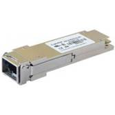

QSFP+(QSFP+ SR /QSFP+ LR )

* 4 independent full-duplex channels Up to 11.2Gbps data
rate per channel Fiber Optical Transceiver
* MTP/MPO optical connector
* QSFP MSA compliant
* Digital diagnostic capabilities
* Capable of over 100m ransmission on OM3 multi-mode
ribbon fiber
* Single +3.3V power supply
* Operating case temperature: 0~70C
* Maximum 1.5W operation power
* RoHS-6 compliant
* Compliant with IEEE802.3ba
* Compliant with QSFP+ MSA: SFF-8436
Package |
Data Rate(bps/Hz) |
Tx(nm) |
Pout(dBm) |
Rx |
Sensitivity(dBm) |
Temp（°C） |
Reach |
Other Option |
QSFP+ |
40G |
|
-8~+1 |
|
≤-13 |
-5 to +70 |
100m |
|